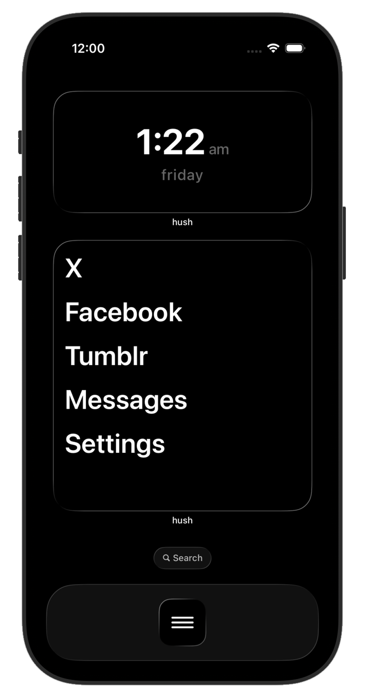

The minimal app launcher
your phone,
but quieter
A minimal home screen that shows only the apps you choose. Nothing more.

Why hush
Silence the noise
Your home screen should help you focus, not distract you. hush replaces the grid of icons with a clean list of the apps that matter.
Be present
Open only what you intended. No more mindless scrolling through pages of apps you don't need.
Own your home screen
Replace the cluttered icon grid with a clean, minimal widget. Your phone finally feels like yours.
Feel the calm
Less visual noise means less mental noise. A quieter phone helps you feel more at peace.
How it works
Simple by design
Choose your apps
Pick the few apps you actually need from 170+ supported apps across 12 categories.
Add the widget
Place the hush widget on your home screen. Customize the background and font size to your liking.
Enjoy the quiet
Hide your app icons, set a matching wallpaper, and experience a phone that works for you.
Customize
Make it yours
Choose your background, adjust your font size, and generate a matching wallpaper. Everything stays minimal.
Background styles
Black, dark gray, gray, or white — pick what feels right.
Font sizing
Small, medium, or large — designed for readability.
Matching wallpaper
Generate and save a wallpaper that blends with your widget.
Ready for quiet?
Download hush and transform your home screen in under a minute.
Download on the App Store